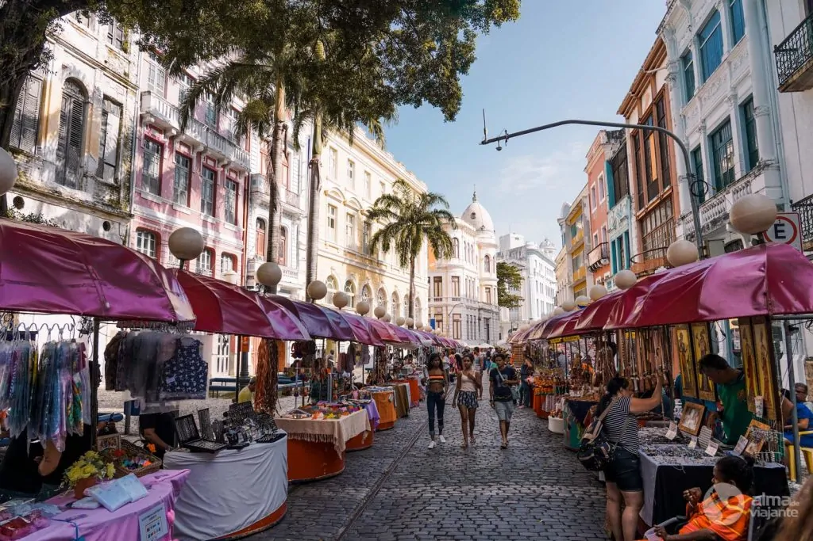
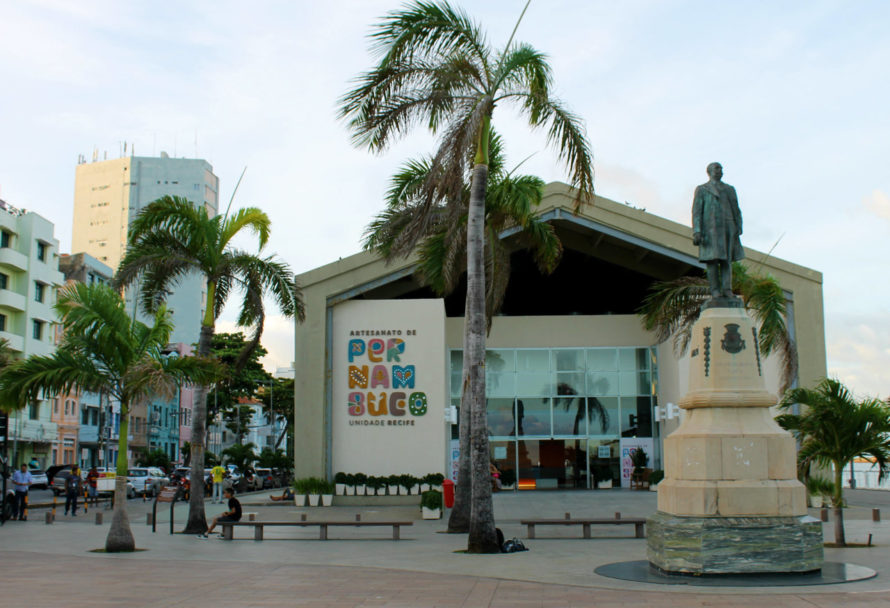
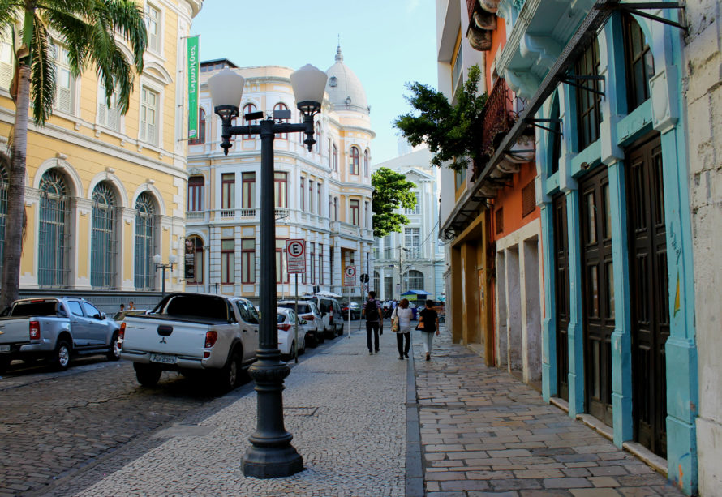
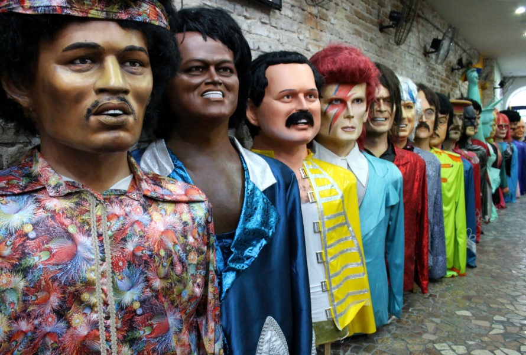

O nome oficial é Bairro do Recife, mas todo mundo chama mesmo é de Recife Antigo ou, quando começa a intimidade, só “Antigo” mesmo. Charles Darwin, Santos Dumont e Dom Pedro II estão entre os personagens ilustres que já desembarcaram num dos pedaços mais interessantes da capital pernambucana, e você não vai perder a chance de entrar pra essa lista, né? :P Afinal, esse bairro por si só já faz valer no mínimo um dia na cidade antes de você correr pras praias dos arredores.
Além de caminhar sem rumo pelas ruas de paralelepípedos, lembrando sempre de olhar pra cima pra paquerar os prédios históricos, um dia no Recife Antigo inclui um punhado de atrações massa, sem falar nos bons bares e restaurantes.
E apesar de ser um dos principais cartões postais recifenses, o bairro não é só pra turista ver: ele também é o maior polo tecnológico e um dos principais centros de lazer e cultura da cidade.
Centro de Artesando de Pernambuco
No Marco Zero você encontra um complexo de restaurantes e bares e o Centro de Artesanato de Pernambuco. Com preços um pouco inflacionados, o espaço reúne itens decorativos e brinquedos feitos de barro, madeira, renascença etc. Muita coisa pra deixar a casa linda e pernambucanizada
Rua Bom Jesus
A Rua do Bom Jesus além dos prédios coloridos, ela abriga a primeira sinagoga nas Américas, Kahal Zur Israel, que é um dos marcos mais importantes da presença judaica no Brasil colônia e pode ser visitada. Ali você encontra também a Embaixada dos Bonecos Gigantes, tipo um museu pra esses bonecos que são marca registrada do nosso Carnaval. O lugar consiste basicamente de uma sala cheia de bonecos, então não espere muito da visita, mas é interessante ver de perto essas versões gigantes de figuras célebres como Ariano Suassuna, Bowie, Carmen Miranda e Darth Vader.
